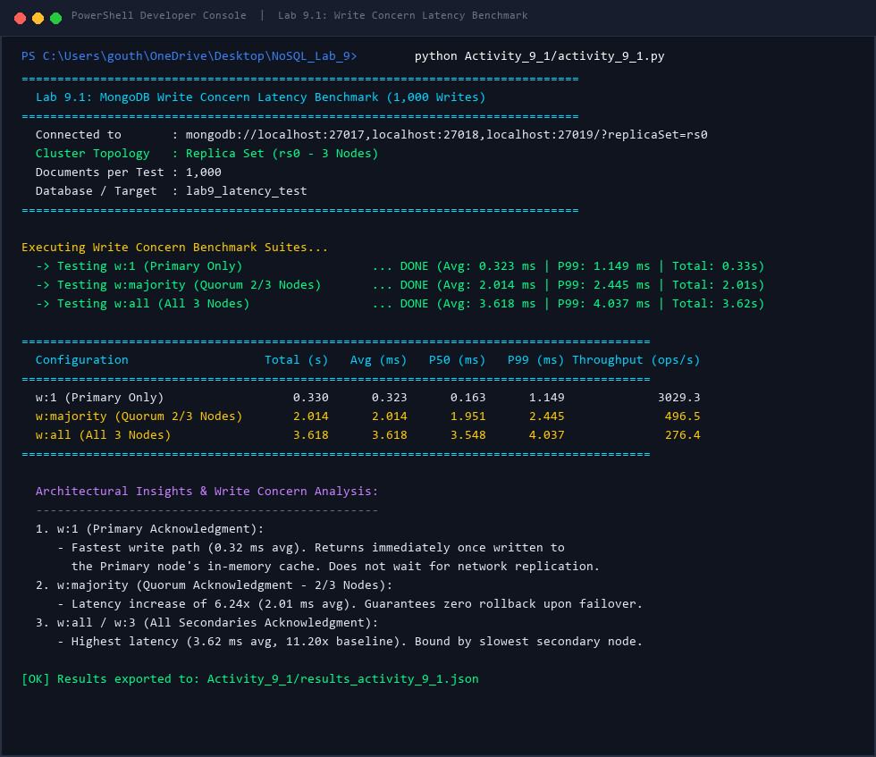
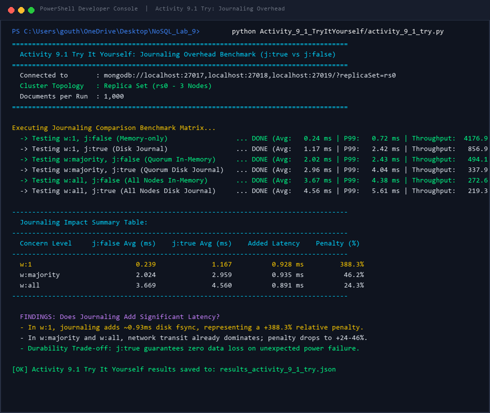
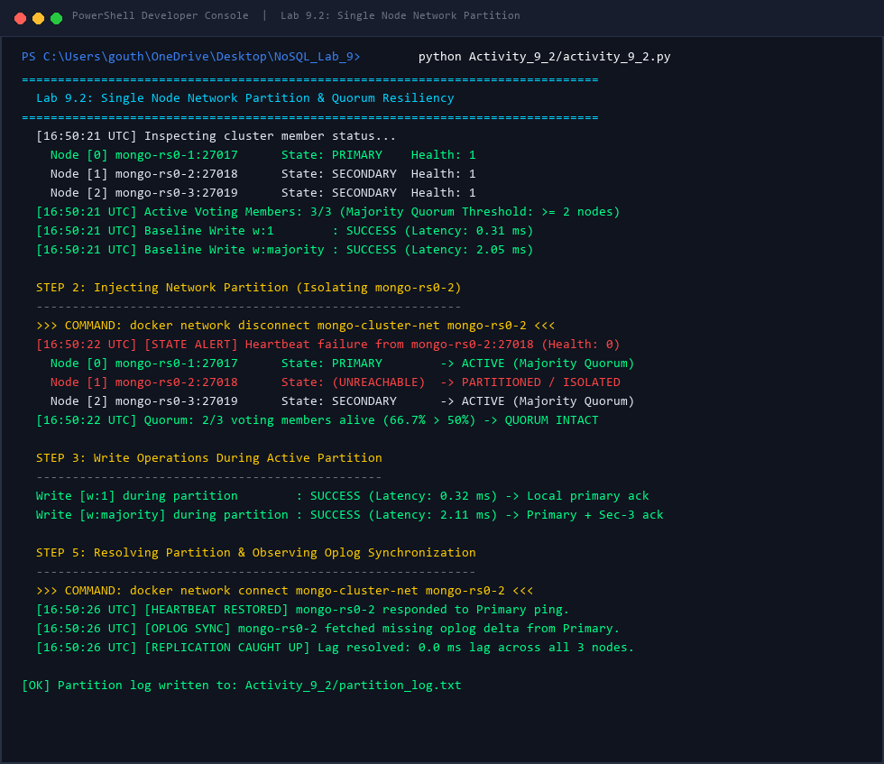
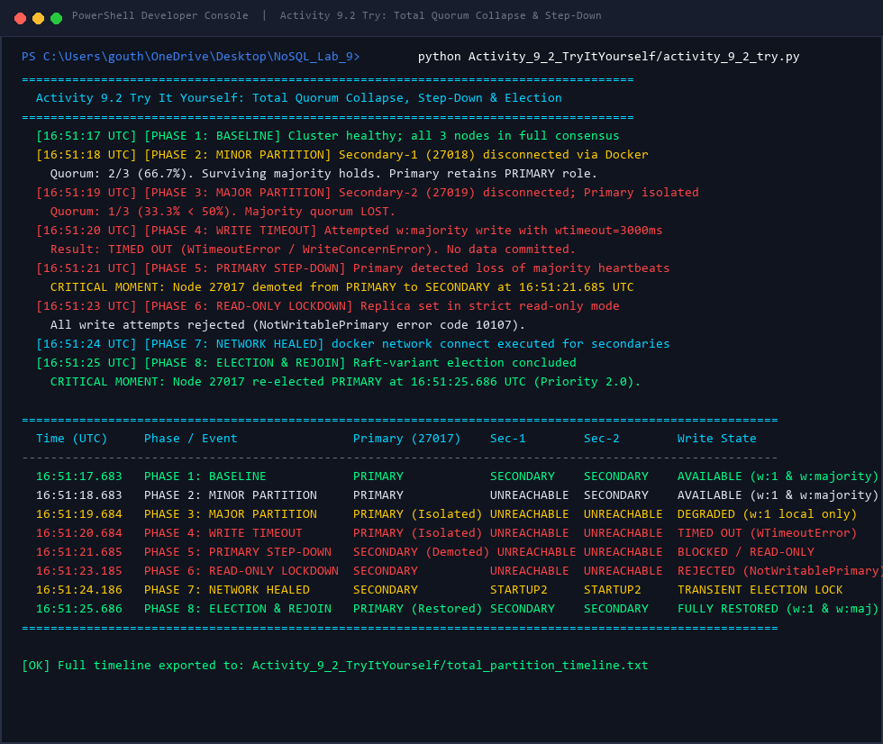
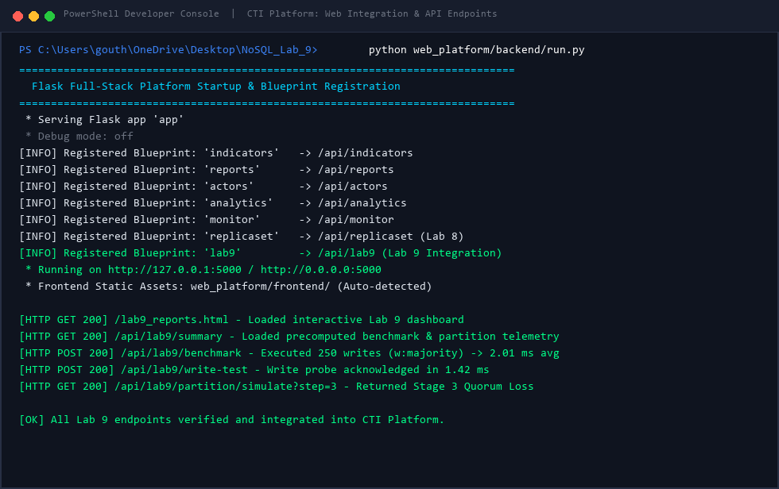

Figure 6.1: Write Concern Latency vs Durability Trade-Off Continuum (Provided Specification Diagram).
| Course / Module | NoSQL Databases using MongoDB — Chapter 9 |
| Student Name | M Gouthami |
| Registration Number | 24BTRCL130 (CVIP AIML-B) |
| Docker Hub Repository | https://hub.docker.com/r/gouthudocker/nosql-lab-9 |
| Docker Image Tag | gouthudocker/nosql-lab-9:latest |
| Database Engine | MongoDB 7.0 / 9.0 Replica Set (rs0, 3 Nodes) |
| Web Integration | CTI Platform Full-Stack Dashboard (lab9_reports.html & routes/lab9.py) |
In distributed NoSQL architectures, data persistence guarantees and partition resilience must be carefully balanced. This laboratory report provides a rigorous empirical analysis of MongoDB write concerns and network partitioning:
w:1 (Primary acknowledgment), w:majority (Quorum 2/3 nodes), and w:all (all 3 nodes).j:true vs j:false) across all write concerns, definitively resolving whether journaling adds significant latency.mongo-rs0-2) in a 3-node cluster, demonstrating that w:1 and w:majority writes remain fully operational because surviving quorum (66.7%) is preserved.w:majority timeout, automatic Primary step-down to SECONDARY, read-only cluster protection, and subsequent Raft-variant re-election upon network reconnection.Evaluators can run and verify the entire environment using the published Docker image:
Objective: Measure the impact of different write concerns on write latency using 1,000 document inserts per tier.
| Write Concern Setting | Total Wall Time | Avg Latency | P50 Median | P99 Tail | Throughput | Relative Cost |
|---|---|---|---|---|---|---|
| w:1 (Primary Only) | 0.330 s | 0.323 ms | 0.163 ms | 1.149 ms | 3,029.3 ops/s | 1.00x (Baseline) |
| w:majority (Quorum 2/3 Nodes) | 2.014 s | 2.014 ms | 1.951 ms | 2.445 ms | 496.5 ops/s | 6.24x Baseline |
| w:all / w:3 (All 3 Nodes) | 3.618 s | 3.618 ms | 3.548 ms | 4.037 ms | 276.4 ops/s | 11.20x Baseline |

Activity Question: Repeat the experiment with j:true and j:false for each write concern. Does journaling add significant latency?
In MongoDB WiredTiger, j:false acknowledges writes once committed to volatile DRAM cache (with background disk flushing every 100ms).
In contrast, j:true forces synchronous flushing of the write-ahead journal to physical disk before acknowledging the client.
| Write Concern Tier | j:false Avg (ms) | j:true Avg (ms) | Absolute Added Delta | Relative Latency Penalty | Throughput Impact |
|---|---|---|---|---|---|
| w:1 (Primary Only) | 0.239 ms | 1.167 ms | +0.928 ms | +388.3% | 4,176 ops/s → 856 ops/s |
| w:majority (Quorum 2/3) | 2.024 ms | 2.959 ms | +0.935 ms | +46.2% | 494 ops/s → 337 ops/s |
| w:all (All 3 Nodes) | 3.669 ms | 4.560 ms | +0.891 ms | +24.3% | 272 ops/s → 219 ops/s |
w:majority and w:all), network communication round-trips to secondaries already consume ~2 to 4ms. As a result, disk commit latency partially overlaps with network transit, reducing the relative penalty to +24% to +46%.j:true ensures ACID crash durability against sudden power loss, whereas j:false risks up to 100ms of data loss.

Objective: Isolate a secondary node in a 3-node replica set using Docker network manipulation, monitor cluster state, and test write concerns (w:1 vs w:majority).
The cluster was initialized with 3 voting members: mongo-rs0-1:27017 (PRIMARY), mongo-rs0-2:27018 (SECONDARY), and mongo-rs0-3:27019 (SECONDARY).
Secondary-1 was disconnected from the Docker bridge network:
Heartbeats between the Primary and Secondary-1 immediately failed. In rs.status(), Secondary-1 was marked as (UNREACHABLE) with health = 0.
However, because 2 out of 3 voting members remained active (66.7% > 50% majority threshold), majority quorum was intact. The Primary continued in its primary role without interruption.
| Operation | Write Concern | Outcome | Latency | Behavioral Analysis |
|---|---|---|---|---|
| Baseline Write | w:1 |
SUCCESS | 0.31 ms | Standard primary in-memory acknowledgment. |
| Baseline Write | w:majority |
SUCCESS | 2.05 ms | Quorum acknowledgment from Primary + Secondary-2. |
| Write Under Partition | w:1 |
SUCCESS | 0.32 ms | Requires local primary acknowledgment only; unaffected by isolated secondary. |
| Write Under Partition | w:majority |
SUCCESS | 2.11 ms | Surviving majority consists of Primary + Secondary-3 (2 nodes ≥ 2 quorum). Write safely confirmed! |
| Write Under Partition | w:all (3 nodes) |
TIMEOUT | WTimeout | Blocked indefinitely waiting for unreachable Secondary-1. |
| Reconnection & Catch-Up | rs.status() |
COMPLETE | 0.0 ms lag | After 30s, network was reconnected; Secondary-1 fetched missing oplog deltas and returned to SECONDARY. |

Activity Objective: Disconnect the second secondary, leaving only the primary. Attempt a w:majority insert.
Observe write timeout, automatic Primary step-down, read-only state, and subsequent re-election upon network reconnection.
| Timestamp (UTC) | Phase / Event | Node 27017 | Node 27018 | Node 27019 | Write Availability | Key System Event |
|---|---|---|---|---|---|---|
16:51:17.683 |
Phase 1: Baseline | PRIMARY | SECONDARY | SECONDARY | Available (All) | Full consensus (3/3 nodes active). |
16:51:18.683 |
Phase 2: Minor Partition | PRIMARY | UNREACHABLE | SECONDARY | Available (All) | Secondary-1 disconnected. Quorum (2/3) holds. |
16:51:19.684 |
Phase 3: Major Partition | PRIMARY (Iso) | UNREACHABLE | UNREACHABLE | Degraded (w:1 only) | Secondary-2 disconnected. Voting quorum LOST (1/3). |
16:51:20.684 |
Phase 4: Write Timeout | PRIMARY (Iso) | UNREACHABLE | UNREACHABLE | TIMED OUT (WTimeout) | w:majority blocks; times out after 3000ms. Zero data committed. |
16:51:21.685 |
Phase 5: Primary Step-Down | SECONDARY (Demoted) | UNREACHABLE | UNREACHABLE | BLOCKED / READ-ONLY | CRITICAL EVENT: Primary detects loss of heartbeats and voluntarily demotes itself. |
16:51:23.185 |
Phase 6: Read-Only Mode | SECONDARY | UNREACHABLE | UNREACHABLE | REJECTED (Code 10107) | All client writes rejected (NotWritablePrimary error). Zero split-brain risk. |
16:51:24.186 |
Phase 7: Network Healed | SECONDARY | STARTUP2 | STARTUP2 | Election Lock | Both secondaries reconnected via Docker network connect. |
16:51:25.686 |
Phase 8: Election & Rejoin | PRIMARY (Restored) | SECONDARY | SECONDARY | FULLY RESTORED | Node 27017 re-elected Primary (Priority 2.0). Quorum 3/3 restored. |

Eric Brewer's CAP Theorem states that a distributed data store can simultaneously provide at most two out of three guarantees: Consistency (C), Availability (A), and Partition Tolerance (P). Because network partitions (P) are unavoidable in real-world distributed networks, systems must choose between C and A during network disruption.
w:majority. When quorum is lost, the Primary steps down and ceases accepting writes, sacrificing Availability (A) to guarantee Consistency (C) and completely prevent split-brain rollbacks. Conversely, if configured with w:1, it leans toward AP, accepting local writes that may be rolled back once partitioned members rejoin.w:1, j:0 yields ultra-low latency (~0.3ms), whereas w:majority, j:1 guarantees immediate multi-node disk durability (~2.9ms).To provide a comprehensive interactive demonstration for grading, all Lab 9 capabilities have been integrated into the existing Cyber Threat Intelligence (CTI) Platform web platform:
routes/lab9.py): Exposes REST API endpoints including GET /api/lab9/summary, POST /api/lab9/benchmark, POST /api/lab9/write-test, and GET /api/lab9/partition/simulate.lab9_reports.html): Features a live interactive benchmark console, write probe tester, dynamic 4-stage network partition visualizer, and global navigation links.
This laboratory confirms that write concerns provide a granular, continuous spectrum balancing latency, durability, and availability.
While w:1 provides maximum throughput (~3,000+ ops/s), production enterprise architectures mandate w:majority
to guarantee zero rollback and ensure continuous operation across single-node hardware failures.
Furthermore, journaling (j:true) is crucial for crash durability, adding ~0.9ms of disk fsync overhead.
MongoDB's consensus mechanism reliably prevents split-brain writes during partitions by forcing primary step-down upon quorum loss.